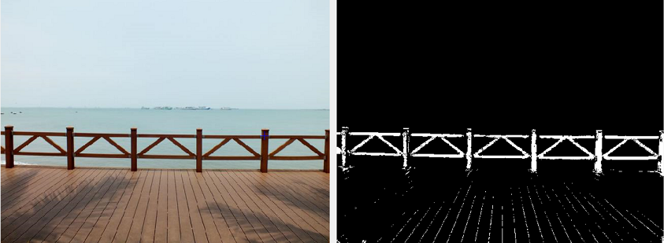
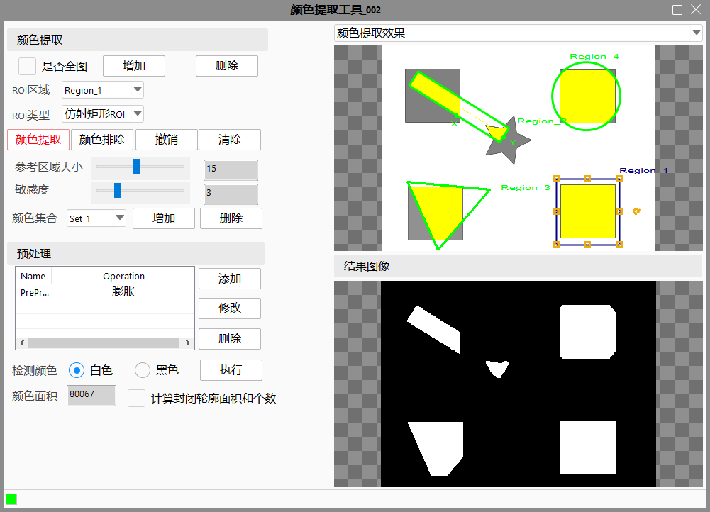
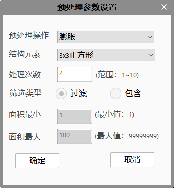

颜色提取工具主要功能是在颜色图像中将指定颜色区域提取出来，输出灰度图像，目标颜色区域为置为白色，其他区域置为黑色。


右键工具，点击属性进入到工具的高级界面，如上图。选择需要颜色提取的区域后点击颜色提取，状态栏显示颜色提取，然后鼠标在输入图像中挪动，红色的选择框会自动跟随，等确认区域后单击鼠标即可完成单次的颜色提取。红色选择框默认大小是15像素，可以通过左侧“参考区域大小”的滑动条进行大小调节。提取完成后输入图像上的下拉列表会自动切换到颜色提取效果窗口，观察提取效果，若颜色提取的效果不完整，可以进行多次提取。当点击颜色排除按钮后，状态栏显示颜色排除，鼠标在图像上移动时，红色区域大小为1像素，点击图像区域，在所提取颜色中对所选颜色的进行排除，生成新的颜色提取结果和效果图像。
在颜色提取或颜色排除操作后，若发现效果不佳，可以点击“撤销”按钮，提取结果会恢复到操作前的状态。若想去除当前的处理效果重新进行颜色提取，可以点击”清除”按钮。颜色提取可以在全图进行操作，提取的结果只处理在ROI以内的。
新增功能颜色集合介绍：原工具仅支持一组颜色集合提取功能，当检测图上出现多组目标颜色需要提取时，则需调用多个颜色提取工具对象进行提取，该方法浪费内存资源。因此在原颜色提取工具上进行功能升级，支持多组颜色集合进行提取。高级界面中，可以新增和删除集合，颜色提取、颜色排除、撤销、清除操作是对选中的一个集合的操作。

在完成颜色提取后可能处理效果不是很理想，可以通过添加相关的预处理达到目的。现有的预处理包括膨胀、腐蚀、开运算、闭运算、填充、筛选等操作。
在高级属性界面上，点击“添加”按钮，弹出如上图窗口。预处理支持多次操作，通过点击添加完成。若多次的预处理导致最终处理效果变差，可以点击“删除”按钮，效果恢复到上一步的预处理结果。若需要对其中的某一次预处理操作进行修改，需要先在列表框选中，再点击“修改”按钮进行相关设置。
在进行外颜色提取和预处理后，会进行结果图像中感兴趣颜色的面积计算；也可以根据具体应用场景，选择开启封闭轮廓（Blob）面积计算。
颜色面积：结果图像中计算检测颜色白色/黑色像素总面积。
检测值：结果图像中计算检测颜色的封闭轮廓（Blob）的总面积。
检测个数：结果图像中计算检测颜色的封闭轮廓（Blob）个数。
上两步的处理过程都可以在结果图像中实时的观察到处理效果，但是因为中间可能会有颜色提取和预处理的反复调节，为保证效果生效，在需要观察最终处理结果或者退出高级界面前，先点击一次“执行”按钮。
无
| 参数名称 | 参数说明 |
|---|---|
| 开启并行运算 | 是否开启并行运算，选择是时，算法将开启OpenMp并行计算方式，可以提升计算速度，但可能出现耗时不稳定的情况，选择否时，算法将关闭OpenMp并行计算。 |
| 线程数百分比 | 设置并行运算的线程数百分比，有效范围为 (0, 0.75]，对应表示(0%, 75%]百分比范围。 |
| 输入图像 | 进行颜色提取的图像。 |
| 二维线性变换 | 对待提取区域进行平移、旋转、缩放变换。 |
| 参数名称 | 参数说明 |
|---|---|
| 输出图像 | 输出颜色提取后的灰度图像。 |
| 颜色面积 | 结果图像中计算出的检测颜色像素总面积。 |
| Blob面积 | 结果图像中计算检测颜色的封闭轮廓（Blob）的总面积。 |
| Blob个数 | 结果图像中计算检测颜色的封闭轮廓（Blob）个数。 |
| 执行结果 | 工具执行结果。 |
| 执行时间 | 工具执行时间。 |
参见“\Samples\颜色提取工具.gvp”。